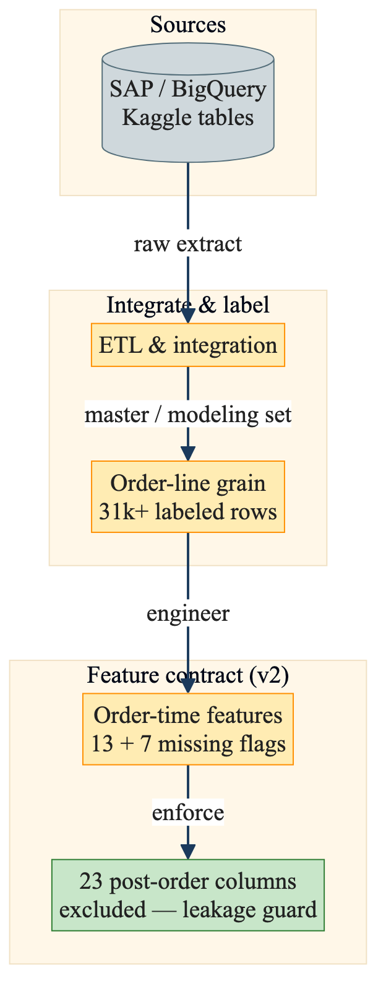

Styling follows the same classDef roles as standup-unified-prod-target-and-cost-optimization.html
(storage / pipeline / process / reporting) and subgraph grouping as in
PROD_Pipeline_Flow_Visualization.html. See ENABLECV_STYLE_REFERENCE.md for exact paths.

01 — Data & feature contract Sources → integrate → grain → order-time features → leakage guard